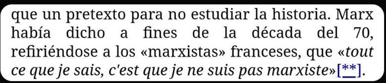

La peña os hacéis llamar comunistas pero luego le tenéis miedo y asco al concepto de comunas y comunidad organizada porque lo único que queréis es cambiar un estado por otro con colores diferentes y no un cambio real. Marx, Engels y Lenin os variarían un cargador en la pierna.
Corpus
Conversación original
Lectura del feed capturado en [context.md](examples/yo-no-soy-yo-propositions-engine/context.md) estructurado en hilos secuenciales completos con sus memes integrados.
Guía del corpus
Abajo verás la secuencia exacta de tweets y quotes de cada hilo en su contexto cronológico.
Original Poster
Tuit disparador y quote original
Leyenda / ALT: pinkie-not-very-barbie-girl: "We need solarpunk as an alternative to capitalism". chinese-solar-punks-girl: "I agree. It's working wonderfully. Pinie girl again: "no that's not real solarpunk! that's authoritarism! real solarpunk doesn't have a government". chinese-girl again: "How will you achieve that without central planning="
Thread 1
Comuna, infraestructura, Estado y MarxComo coño construyes infraestructura en una comuna? Se le llama marxismo leninismo porque Marx en si mismo era anarquista. Se necesita el leninismo porque la aplicación práctica del comunismo requiere de una estructura comunal masiva llamada estado.
*"cómo cono construyes infraestructura en una comuna"* a través de una red de consejos obreros donde se toman las decisiones de barrio en barrio, lo que conocemos como Sóviets.
Llamar a Marx anarquista también es pa verlo
Llamar a Marx anarquista también es pa verlo
Una red de consejos obreros obreros, que a su vez ha de reunirse con otra red de consejos obreros, que a su vez ha de reunirse con... Porque la escala de la empresa a emprender es enorme, entonces necesitas designar representación para hacerlo d forma práctica, formando un estado
Estaría genial lo que dices si no fuera porque tenemos capacidad de viajar de un lado al otro del mundo en cuestión de horas y comunicación inmediata. El estado socialista es necesario, si, pero como algo transitorio hacia su desaparición, como el dinero, la propiedad y la clase
Sigues necesitando representación para hacerlo viable, ya sea en inversión de tiempo o conocimientos necesarios, generando una superestructura. La abolición de los estados y todo lo ligado a ellos se podría decir que es la definición última del anarquismo. Lo que Marx era.
La cosa es que la representación no depende de los votos que uno reciba si no de quiénes deciden participar, si quieres que el gobierno haga algo, presenta tu petición, si crees que no lo hacen bien, vuélvete el gobierno participando en las asambleas.
Realmente no voy a debatir de nada con alguien que llama Anarquista a Marx.
¿Marx anarquista? ¿El que expulsó a los anarquistas de la primer internacional? ¿El que tuvo una rivalidad con Bakunin? ¿El que escribió la pobreza de la filosofía? ¿El que criticó a Stirner? ¿Enserio de ese Marx hablamos?
Marx persigue como fin último la desaparición del estado, si o no? Los desacuerdos con el método y con el fin en si mismo son cosas muy diferentes.
Pensar que el fin último de los anarquistas es la eliminación del estado es probablemente la caricatura hecha militancia
Yo diría que es bastante reduccionista, pero no es mentira. Por eso escribí fin último y no una disertación.
Malditos comunaístas!
Thread 2
Marx, marxismo y la frase "Marx no era marxista"el hecho de que Marx fuese marxista es una tremenda coincidencia
![La imagen muestra a la comediante y actriz británica Diane Morgan interpretando a su personaje Philomena Cunk.Philomena Cunk es conocida por protagonizar falsos documentales satíricos como Cunk on Earth (El mundo según Philomena Cunk) y Cunk on Cinema, ambos disponibles en Netflix y la BBC.El personaje se caracteriza por entrevistar a expertos reales con preguntas absurdas y observaciones equivocadas, ofreciendo una perspectiva satírica sobre la historia y la cultura.El estilo visual del personaje a menudo incluye una chaqueta de mezcla de lana, similar a la que se muestra en la imagen.](./corpus_files/thread-root-question.png)
Leyenda / ALT: La imagen muestra a la comediante y actriz británica Diane Morgan interpretando a su personaje Philomena Cunk.Philomena Cunk es conocida por protagonizar falsos documentales satíricos como Cunk on Earth (El mundo según Philomena Cunk) y Cunk on Cinema, ambos disponibles en Netflix y la BBC.El personaje se caracteriza por entrevistar a expertos reales con preguntas absurdas y observaciones equivocadas, ofreciendo una perspectiva satírica sobre la historia y la cultura.El estilo visual del personaje a menudo incluye una chaqueta de mezcla de lana, similar a la que se muestra en la imagen.
Como coño construyes infraestructura en una comuna? Se le llama marxismo leninismo porque Marx en si mismo era anarquista. Se necesita el leninismo porque la aplicación práctica del comunismo requiere de una estructura comunal masiva llamada estado.
de hecho Marx no era marxista
*taps the sign*
![Con "lema": "La línea política implícita en tu shitpost es incorrecta". Esta imagen presenta al personaje Arataka Reigen del anime Mob Psycho 100.El personaje es conocido por ser un estafador carismático que dirige una agencia de consultas espirituales sin tener habilidades sobrenaturales reales.A pesar de sus engaños, actúa como mentor del protagonista, Mob, enseñándole lecciones importantes sobre la vida y la ética.El meme utiliza su figura para cuestionar la postura política de ciertos contenidos humorísticos en internet.](./corpus_files/thread-main-refutation.png)
Leyenda / ALT: Con "lema": "La línea política implícita en tu shitpost es incorrecta". Esta imagen presenta al personaje Arataka Reigen del anime Mob Psycho 100.El personaje es conocido por ser un estafador carismático que dirige una agencia de consultas espirituales sin tener habilidades sobrenaturales reales.A pesar de sus engaños, actúa como mentor del protagonista, Mob, enseñándole lecciones importantes sobre la vida y la ética.El meme utiliza su figura para cuestionar la postura política de ciertos contenidos humorísticos en internet.

Leyenda / ALT: «La concepción materialista de la historia también tiene ahora muchos amigos de ésos, para los cuales no es más que un pretexto para no estudiar la historia. Marx había dicho a fines de la década del 70, refiriéndose a los «marxistas» franceses, que «tout ce que je sais, c'est que je ne suis pas marxiste» [Lo único que sé es que no soy marxista]».
El comunismo no acepta un loco más eh?